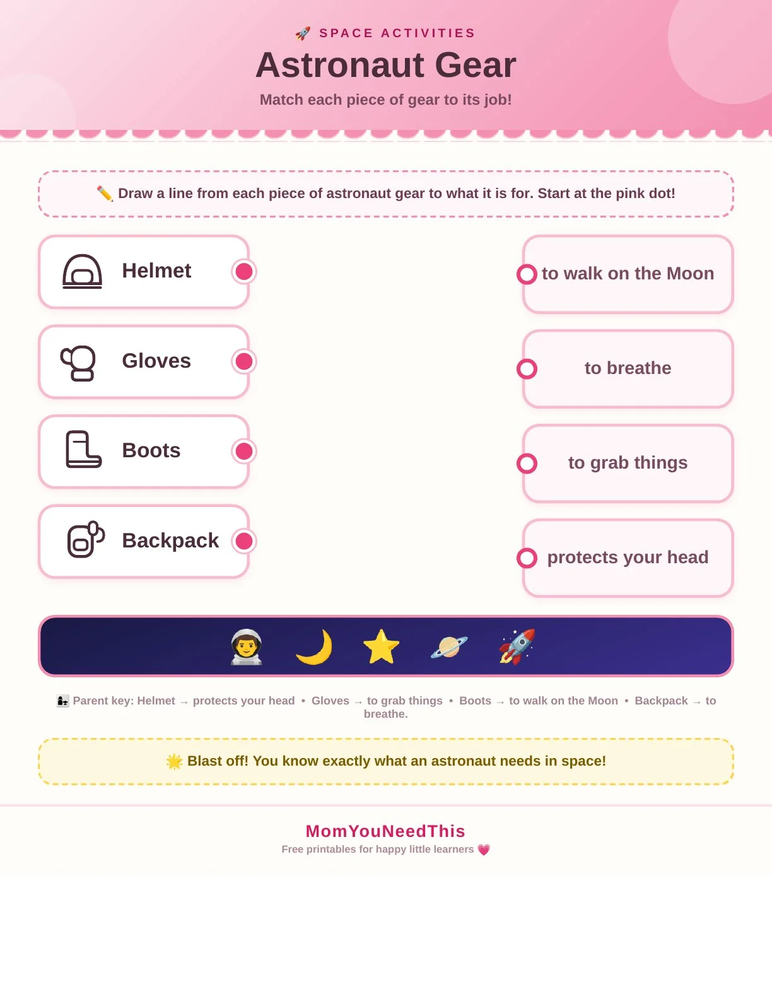

👩🚀🚀 Astronauts Activities Blast Off With Brave Explorers
Quick Answer
This free printable astronauts activity introduces toddlers and preschoolers (ages 2–5) to the real job of an astronaut: training for years, wearing a spacesuit that carries its own air, riding a rocket to the space station that circles Earth, and living floating — eating, working and sleeping while weightless. Kids explore spacesuits and rockets and plan a pretend mission of their own. Download and print at home with no signup needed.
Astronauts are real-life explorers who travel to space. These exciting activities let little learners suit up, count down and imagine their own mission to the stars.
Astronauts are the rare grown-up job that is exactly as interesting as children hope — and the true details are better than the pretend ones. A spacesuit is a personal spacecraft. Astronauts sleep strapped into bags so they do not float away. Their station circles the whole Earth every 90 minutes, so they see sixteen sunrises a day.
👩🚀🚀 Explore Astronauts Activities
Learn what astronauts do, explore spacesuits and rockets, and plan a pretend space mission.
💡 How To Use This Activity
Print the mission pages and run them like a real launch day: suit up (a backpack does the job), count down from ten together, then work through the activities as astronaut training. Finish by letting your young astronaut file their mission report — where they went, and what they saw. The print button opens the full-size page in a new tab if you prefer to print from there.

🖨️ Download Your Free Astronauts Activities Printable
Learn what astronauts do, explore spacesuits and rockets, and plan a pretend space mission. Print it out, grab the crayons, and you're ready — no signup needed.
⬇️ Download Free Printable 🖨️ Print🎁 Free printable for toddlers & preschoolers
🚀 A Day In An Astronaut’s Life
Suiting up. A spacesuit is a wearable spacecraft: it carries the astronaut's air, water, temperature control and radio. The big backpack is the life-support system. On the space station, astronauts wear ordinary clothes inside — the suit is only for spacewalks and the ride.
Launch. The rocket ride to orbit takes about eight minutes of thunderous shaking, and astronauts train for years — in giant swimming pools, where floating underwater rehearses floating in space — for missions that may last months.
Living floating. On the station there is no up or down. Astronauts float from task to task, exercise two hours a day to keep their bones strong, eat food that must not crumble (crumbs float into equipment), and sleep zipped into a bag attached to the wall. Water in space forms floating balls, so drinks come in pouches with straws.
Coming home. The mission report your child files at the end of this activity is real astronaut practice: crews record what they saw, what broke, and what surprised them — because the next crew's safety depends on it.
❓ Astronauts Activities FAQs
What activities are included in Astronauts Activities?
This page collects our free astronaut printables in one place: learning what astronauts do, exploring spacesuits and rockets, and planning a pretend space mission with a mission report at the end. Download the printable below and start learning right away.
Are these activities really free?
Yes — every printable on MomYouNeedThis is 100% free to download and print. No signup, no payment, just tap the download button. A backpack for the pretend suit-up and a cardboard box “capsule” upgrade the whole set for free. A backpack for the pretend suit-up and a cardboard box “capsule” upgrade the whole set for free.
How do I use these activities with my child?
Run it like a real launch day. Suit up (a backpack does the job), count down from ten together, then work through the activities as astronaut training. Finish by letting your young astronaut file their mission report — where they went, what they saw, what surprised them — exactly as real crews do.